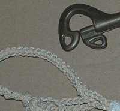

Welcome to the belts page! Click the pictures below to learn about specific belts. Click here to learn more about belts!

12-line belts

16-line belts

20 line #18 belts
24-32 line belts

Special Jewelry

Lanyards